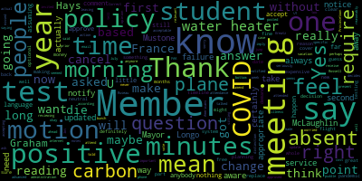
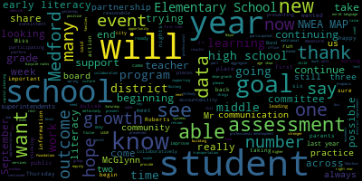

[SPEAKER_04]: negotiations and legal matters and executive session, 5.15 p.m.
[Lungo-Koehn]: On a motion to enter into executive session, to enter into mass general laws, chapter 30A, section 121A, executive session of the Medford School Committee, to conduct a strategy session on the basis of that an open meeting may have a detrimental effect on the bargaining or litigating positions of the Medford School Committee, specifically the Medford School Committee will be discussing ongoing collective bargaining negotiations with nine separate labor units, as well as discussing a grievance filed by the MTA. Motion by Member McLaughlin to go into executive session, seconded by? Second. Member Graham, roll call, vote.
[Ruseau]: Member Graham.
[Lungo-Koehn]: Yes.
[Ruseau]: Member Hays.
[Lungo-Koehn]: Yes.
[Ruseau]: Member Kreatz.
[Lungo-Koehn]: Yes.
[Ruseau]: Member McLaughlin. Yes. Member Mustone.
[Lungo-Koehn]: Yes.
[Ruseau]: Member Ruseau. Yes. Mayor Longo.
[Lungo-Koehn]: Yes. So in the affirmative, zero in the negative, we're gonna head into executive session and we will come back on the floor, hopefully right around six o'clock.
[SPEAKER_04]: Good evening, everybody.
[Lungo-Koehn]: Sorry, we're a few minutes late. We're in executive session to discuss a few things, but one thing we need to announce is that we have voted unanimously to approve the contracts, new contracts for our nurses in the Medford Public Schools, the Carpenters Union, as well as the administrative assistance. Next up, we have the consent agenda, which is bills and payrolls, committee of the whole meeting minutes from June 29th, 2022. regular school committee meeting minutes September 12 2022 motion to sever the committee of the whole minutes meeting minutes from June 29 December by member Ruseau second amendment goff and all those in favor. Hi, all those opposed motion is severed.
[Graham]: Can I just ask a question I didn't have bills in payrolls in my packet. Is that intentional. I did.
[Hays]: That's what I'm looking at.
[Lungo-Koehn]: Yeah, that's what I have to. Oh, no, that's what I have. Other additional bills and payrolls. This is what we have.
[Hays]: We didn't get that.
[Lungo-Koehn]: No, it's okay. Do you want a motion to table until next?
[Graham]: Motion to approve the remaining consent agenda.
[Lungo-Koehn]: Motion to approve the remaining consent agenda agenda by member Graham seconded by Second, Member McLaughlin. All those in favor? Aye. Aye. All those opposed? Is there a motion to table the Committee of the Whole minutes or?
[Ruseau]: I just had questions about them.
[Lungo-Koehn]: Okay. Member Ruseau?
[Ruseau]: Thank you. So this meeting, reviewing the minutes, it says I was absent. I actually was on an advanced notice vacation and actually did not receive notice of the meeting. And I think the minutes should be updated to say I don't know what they need to say, but I was not absent. I was not notified of the meeting. So it's a very important distinction since I missed only one meeting ever for illness and I take attendance very seriously. So I don't know what, if we want to just change the way it says absent to say absent, failure to notify.
[Lungo-Koehn]: Yes.
[Ruseau]: That's acceptable.
[McLaughlin]: Point of, I guess I have a question. If member Rousseau is finished, I'll move on to member McLaughlin. So wasn't there an email sent out to all of us that there was a meeting?
[Ruseau]: Yes. And prior to the email, I had told administration I was away and without internet service or cell phone service, and we had no posted meetings at that point in time.
[McLaughlin]: If I recall, wasn't there a conversation that if there was a meeting, you did not want to attend it?
[Ruseau]: I certainly would never have said that I didn't want to attend a meeting.
[McLaughlin]: I guess I had some recollection of when we were discussing the possibility of attending a meeting that you didn't want to attend.
[Ruseau]: I didn't think the meeting was appropriate but I certainly would have attended any meeting I was invited to as I always have.
[McLaughlin]: Hmm, I think that's. Yeah, I guess I don't recall it quite that way but it's okay for if folks want to vote to have, I think failure to notify us a little bit. harsh language, I guess we did notify you did not have internet access, so.
[Lungo-Koehn]: No internet access. Yeah, no internet access.
[Ruseau]: I'm not okay with that. I've made a motion to amend them to say failure to notify. If there's no second, then.
[SPEAKER_04]: Second.
[Lungo-Koehn]: Motion by Member Ruseau, seconded by Member Graham. Roll call vote.
[Ruseau]: Member Graham?
[SPEAKER_04]: Yes.
[Ruseau]: Member Hays?
[Ruseau]: Member McLaughlin? No. Member Mustone?
[Lungo-Koehn]: Yes.
[Ruseau]: Member Rossell? Yes. Mayor Longo?
[Lungo-Koehn]: Yes. Six in the affirmative, one in the negative. Motion passes. Is there a motion for approval of the minutes?
[Ruseau]: I have one more question. I'm sorry. I'm reading the minutes, since this is the first time, aware of the meeting, I mean I was aware that there was a meeting while I was away, but I'm reading it and there's a lot of like there's all these motions with no language that says what the motion was there's like motion to accept what was perhaps talked about. I just don't know how anybody can take action off of these minutes without actual language saying what was approved. So, this is a comment I, I wasn't there. I'm assuming when it says motion to accept changes. that there were really changes, but reading through the minutes, I don't think anybody who wasn't present could reasonably know what it was was being asked to happen and by whom. So those are comments on the minutes, but I would still vote to approve them because there's nothing being asked to happen here as far as I can tell.
[McLaughlin]: So did you make a motion to approve them? Sure.
[Lungo-Koehn]: Motion for approval by Member Ruseau, seconded by... Second, Member McLaughlin. All those in favor? Aye. All those opposed? Minutes are approved. We have no reports of subcommittee. And then there's a motion for suspension of the rules by Member Kreatz to take out of number six, which are reports of the superintendent. Number four, request for approval for trip to France. Dr. Peter Cushing, Assistant Superintendent of Enrichment and Innovation. and world language teacher, Marie Nyland.
[SPEAKER_04]: Good evening.
[Cushing]: Good evening, Madam Mayor, members of the school committee. I'd like to take a moment to say that you'll remember at the start of the pandemic And I think it was either January or February, one of the first things that the district did was to cease any international travel. This was prior to the statewide and nationwide closure of schools. And one of the things that we did, we had 39 students who were going to be traveling to Europe. We suspended that trip. We're able to secure students money back and in large part. And we are here tonight for these two phenomenal members of our staff to request approval to start that process for a trip this April. And I will turn it over to Miss Bebo and Miss Nyland to go through the further details. Thank you.
[Nyland]: Good evening, ladies and gentlemen. How are you? So long, I was here. Basically, I'm gonna do the same story. I'm gonna ask for your vote for Medford High School world language students to go on a trip on April 2023 during the April vacation. Okay, so let me see. We're gonna be working with the same company, which was Travel by Design. I think you all got the itinerary and the insurance. wording that I had given to Mr. Cushing, and he read it, and it looks like everything is good with that. So basically, yeah, we haven't advertised it yet. However, I am teaching a level four French class this year, and since they were my level one French students, I kind of promised them we were gonna have this trip when they were seniors, and they're seniors this year. Like Mr. Cushing was saying, we had to cancel the last one. We had 39 seniors going. It was phenomenal. We were working with the same company. They did get all their money back except the $100, which was the airline. a deposit that they had put. So basically this year, it's the exact same thing, because I'm working with Travel by Design, same person, Giuseppe Tarzia. We love him. He's fantastic. And it's the same price. It looks like the price hasn't gone up. So on your itinerary, in the last page, you'll see the price range. Now, the only difference this year, well, 2023, is that we want to limit the numbers to about 25 to 30. 30 would be like on the high end, and it would be an exception to somebody who really, really wants to go and is a senior, and this will be their last chance to go. And then we'll put them on the list. But 25, 26 is, I think, the max we're going to go with. this coming trip. The chaperones are six to one. That's why I love this company. I actually have worked with the Education Foundation. There's a lot of travel companies. Giuseppe here does such a great job, six to one. So if we have 25, I think he'll, no, well, it's four, but I think he'll throw in the five. the fifth one for free, fifth chaperones for free. We usually ask an administrator to join us. And then we ask the world language teachers so they can have a chance to go and then we'll take it from there. Then we usually ask the history teachers because they know their history and France and all that great stuff. Let me see, what else? So insurance. Yeah, so the last time, of course, Hopefully there's another pandemic, who knows, right? In April, but please know, right? So we have this form here, which is extra insurance that most of the families took. It's an extra $100 and this covers everything. So a natural disaster, God forbid, a death in the family of the traveler, they get their full money back, except that $100 again, that's the airlines. Okay, so that's good to know. They'll have to do that. We have, you know, the itinerary is right there. Is there any questions?
[SPEAKER_05]: Before people says something to Yes, thank you. So I just wanted to.
[Edouard-Vincent]: First, thank you so much for styling I wanted to just formally announced that Miss bill motherbo is our coordinator of world language. And we are so happy. We are so happy to have you on board this year. supporting world language programming. So I just wanted to say congratulations and welcome and thank you for taking on that challenge to support world languages at the high school. And so I want to make sure that I will do something again, we'll be introducing and announcing more of the new administrators this year. But while you were here today, I didn't want to miss that opportunity. And I also just wanted to share how excited I was about that yellow form. When Miss nylon was like now it's the $100, because it was very stressful. When we had to cancel that trip. And it was a lot of students, a lot of money that families sacrificed and the kids worked and saved. And then the pandemic had started. So, thankfully now we have the insurance in place and I look forward to offering our students more expeditionary learning opportunities. all over the world when possible. I'm not sure, Miss Nyland, did you say, or did you share with the committee yet, if you're not able to get 25 students that are in the French program that want to attend, what do you do then with the remaining seats?
[Nyland]: Correct. So we start by advertising to the French language students who are taking French at the high school, and we reach out to sophomores, juniors, and seniors. Freshmen, not yet, they have to be sophomores, so we're not gonna bring any freshmen at this time. So we reach out to them. We have about, how many in the French department, about total, like sophomores, juniors, 80, 80, 90. So we keep it open for them. They get priority for about two weeks. And then if the numbers are not coming in, we reach out to all the world language students. So that would be the Italian students and the Spanish students. And it happens. 25 comes quickly. I mean, and that's why we got to 39 the last time. I literally could not have, I couldn't send kids away. And they were all seniors. This was going to be their senior trip. You know how they go on a senior trip. to go to France on their senior trip. How great is that with us? So we couldn't say no, so the number was really up there. And we had all the chaperones lined up anyway, and they were awesome chaperones. I think we had like eight chaperones coming with us. And then of course we have to cancel everything. So that's, I think, the process on how we recruit or the list.
[Lungo-Koehn]: That's wonderful. Exciting. If there's no questions, is there a motion for approval? Member Graham?
[Graham]: Thank you. Um, I'm so excited to see these trips returning, and thank you for taking the time to organize, I just had a couple of questions about the insurance, so I think what I'm understanding is that, in general, the cancellation policy is 60 to 31 days, you get half of your package back. 20 to 15 days, you get 75%, or sorry, you get a penalty of 75%, meaning you'd get 25% back. And then zero to 14 days, you don't get anything back on land. But then if you have canceled for any reason, you can get up to 75% back, is that correct? Like, I'm just trying to make sure I understand like what this is, because it actually doesn't seem that different than what we were grappling with, like right before the pandemic, where the students were essentially getting nothing back. And I was just curious if the insurance had evolved at all since then, given like, you know, the last two and a half years. And I think the other important thing that I think I just wanna make sure I'm clear about is that airfare is not covered by this insurance. Is that correct?
[Nyland]: The airfare, it is, except for the $100, right? Remember, they did get all the money back except for minus 100, that's it, which was a deposit for the airline at that time.
[Graham]: I don't think that's what this says, though.
[Nyland]: Okay, so you see how there's two reasons? So if there's a death in the family or a natural disaster, they're going to get the full amount back. If for any reason, like anxiety, or they get cold feet, then this amount applies. Where, you know, 14 to zero days, you see what you're seeing on that on that one? Okay, if you read it says option is highly recommended for protection from trip cancellations due to anxiety, or such a sensitivity of travel. That's where this is gonna apply. But if there's like a natural disaster, like we had, I made it very clear with Giuseppe, they're getting all their money back. Do you see what I'm saying?
[Graham]: Okay, so this form governs what happens if you cancel for any reason, which is in addition to getting your money back for like the other reasons that are listed. in the details of this, is that correct?
[Nyland]: Correct, but the reasons that you get your full money back has to be natural disasters or death in the family, but you cannot travel. But if you just don't wanna go because you changed your mind and you have anxiety for traveling, you're not getting your money back.
[Graham]: See what I'm saying? Okay, and airfare is or isn't included. in the refund?
[Nyland]: Good question.
[Graham]: I can let you know. Okay. I just wanna make sure people are clear.
[Nyland]: For natural disaster and death in the family, the airfare, yes, it is included. Okay. It's included.
[Graham]: And for cancel for any reason, if you take the insurance and you cancel, is your airfare refunded to you?
[SPEAKER_04]: I'm trying to read this.
[Nyland]: I'm not going to answer that yet because I don't want to give you the wrong answer.
[Graham]: Yeah, I just want to make sure that I think this is like there's a lot of information here and I just want to make sure that we're explaining it to families so we're not relying on them to read this like 20 page like fine print insurance policy because I don't think that they will. And I think there were a lot of families that were really, really, really surprised. And I know it all worked out financially OK when we had to cancel that trip, but. It was sort of heartbreaking to listen to students who thought they were going to lose a lot of money and just the issue.
[Cushing]: Just real quick. The issue at that time with those trips was that there had not been a federal declaration. There is not that state declaration. It was the Medford public schools is making travel at this time, not something we're going to do. So that's where we were at that crossroads. Once those declarations came forward from the federal government, from the state government, that then triggered these clauses of natural disaster and things of that nature.
[Lungo-Koehn]: Okay. And each family will get the insurance policy.
[Vilma Bibeau]: Yes, I was just going to add, if you allow me, that when we present this to families, we make sure that we are very clear on the distinction that Ms. Nyland just provided you, meaning the distinction between the cancellation, of course, for natural disaster or death in a family versus if a child decide then not to travel anymore for personal reason. We're going to make sure that we have those distinction clear with the family members.
[Lungo-Koehn]: Perfect. Thank you. Member Ruseau?
[Ruseau]: Thank you. So if a student tests positive for COVID in the morning that they're leaving, this policy, according to its own little notes at the bottom, has not been updated since July 1 of 2015. So definitely, they didn't update it specific for COVID, which I guess is fine. But I'm assuming that if the FAA still requires tests, do they require testing anymore, or is it just a free-for-all on planes? They do not require us to France might well require a test.
[Nyland]: And I know that again, who knows?
[Ruseau]: Right.
[Nyland]: Yeah.
[Ruseau]: But so if they test positive the morning of because they test positive a week before, it's not really relevant. Correct. Are they just out the whole cost because they can't get on the plane because France decides that it's not accepting Americans who won't?
[Nyland]: Well, they shouldn't get on the plane, right? If France let them in.
[Ruseau]: I'm just worried about that because it seemed, I mean, more and more people I know now have COVID than I feel like at any point in the pandemic all at once. And, you know, it's not a puddle jump to Provincetown or something, it's a long flight to be sitting with a bunch of other people if you have COVID. It's also not, in my opinion, appropriate to ask our students to make that decision it needs to be clear ahead of time what they will do in that case and then that I know you don't have an answer to all that right now but this, this seems to imply that there are two different policies, there's the cancel for any reason, and then the optional cancel for any reason. The second one, which is the more expensive and that's the one that's $100 or is the first one $100.
[Nyland]: So, so, so the first one is included and then if you want extra you see how up on top where it says and charge $100 for optional see far insurance you see the first I did.
[Ruseau]: Yep. Thank you. So, um, I guess until we have an answer on the student who test positive for code but the day before the morning of. I'm, I'm a little uncomfortable with just one part of this. If, if the optional cancel for anything covers a student who tests positive the morning of the first flight. I feel like maybe we should make it a policy this year that people have to pony up the hundred dollars. If it doesn't cover that scenario, then there's no point. But I just know that students who test positive and their families and some students who work part-time jobs for a long time for this. If the whole trip goes out the window the morning of because they have COVID and the policy says they get nothing back. we all know the way they'll be standing the following Monday. I would be there as a parent, even if I didn't expect any results. So I just feel like if for $100, if we can make sure that people testing positive only a couple of months, a few months from now, are gonna get something back, I would be open to that as a member, making that a requirement for this year. But without knowing that, I don't know how to proceed with that.
[Lungo-Koehn]: Member Hays.
[Hays]: Yeah, I just wanted to point out, and maybe you still want like hard and fast COVID counts, but on page three under coverages, it does talk about medically imposed restrictions being covered. So I would assume that would be a medically imposed restriction. It's number two under coverage.
[SPEAKER_04]: There's lots of number twos.
[Lungo-Koehn]: 2A, yep. Your, your family members, traveling companions or business partners that was sickness or injury.
[SPEAKER_04]: I guess there's man.
[Lungo-Koehn]: Remember, so thank you.
[Ruseau]: That's great to see. The issue of course is medically imposed restrictions. So if the U.S. doesn't mind if people with COVID get on planes and France does, this is a U.S. based policy. Are they going to be like, wow, we're fine with you getting on a plane. It's where you land, it doesn't. So I feel like this is the kind of question that definitely has probably been asked so far during the pandemic. I don't have answers though.
[SPEAKER_04]: Mayor.
[Graham]: Member Graham. Can I just make a suggestion? I think I would like to make a motion that we approve this field trip contingent on our legal counsel doing a review of this insurance policy and ensuring that the way this is explained to parents is in compliance with the weeds of this insurance policy so that parents know precisely what the policy will and won't cover in general, but also specific to COVID scenarios.
[Lungo-Koehn]: Motion for approval as amended, seconded by Member McLaughlin. All those in favor? Aye. All those opposed? Motion passes. Thank you. Have fun.
[Hays]: Thank you.
[Lungo-Koehn]: Happy signups. Motion to revert back to the regular order of business by Member McLaughlin, seconded by Member Kreatz. All those in favor? All those opposed? We have our Superintendents updates and comments Dr Marice Edouard-Vincent.
[Edouard-Vincent]: Good evening. The method public schools. We have begun to host curriculum and meet the teacher information nights at all of our schools. This past week, both middle schools, the McGlynn Middle and the Andrews Middle School held their events. The McGlynn Elementary School and the Brooks Elementary School also welcomed parents and caregivers. This week, the Missittuck Elementary School will be holding theirs on Thursday the 22nd from 530 to 730 p.m. and next week, the Roberts Elementary School and Medford High School will be holding their events on September 29th. It is critical and important, very important that parents and caregivers can put names to faces and feel the ability or want to be as actively an active participant in the child's educational success this year. Also, we are very happy just to have the opportunity for parents to come in person. once again get back to running schools in a normal way. So thank you and I hope as many parents as possible come to support curriculum nights and meet the teacher nights. Yesterday, I want to applaud Mustang alum, Mr. Dave McGillivray, who directs the Boston Marathon for hosting the successful inaugural Run Medford event yesterday. A number of our school PTOs were able to raise funds as runners and walkers. All ages throughout the district and the community were able to enjoy this beautiful and historic race day. Our own Mayor Brianna Rungelkorn was just one of the hundreds of runners who participated yesterday. And I don't know Mayor, you were sharing that you ran a very fast mile. Do you want to tell us that number?
[SPEAKER_05]: No, I just want to say how sorry I am.
[Edouard-Vincent]: Anyway, it was a beautiful event. I know you did it in under six minutes. Six minutes and 50 seconds. So that's fabulous, fabulous. So thank you to our Mustang alum, Mr. Dave McGillivray for bringing such a wonderful event to Medford. I also want to wish and thank our HELLO students at Tufts University for reaching out to partner with McGlynn Middle School to provide an afterschool program on Tuesdays and Thursdays. This student-run organization was designed by the HELLO Community Action Partners, a social justice initiative to provide direct community action to students in both Medford and Somerville. On Tuesdays, Hillel presents engineering activities, and on Thursdays, it presents art activities. Both days, the Hillel students will also offer tutoring and homework support for our students. The program will begin tomorrow and will run weekly until December 9th. I also would like to express a very special thanks to Mr. Anthony Petrellis, He's a grade five teacher at the McGlynn Elementary School, and he hosts Beyond the Podcast. He hosted a cornhole tournament at John Brewer's Tavern to raise funds for autism message boards. Anthony works collaboratively with the Doug Flutie Junior Foundation for autism, and was able to raise enough funding to be able to purchase three more autism boards for our remaining elementary school playgrounds. The McGlynn, the Brooks, and the Missituk. Last year, one was placed at the Roberts Elementary School. Our partnership with the Flutie Foundation enables our students affected by autism to live life to the fullest. Thank you, Anthony and the Flutie Foundation for your dedication to helping all our students better communicate with our teachers and staff. I also want to share that currently the Medford Family Network is in the process of collecting new or gently used Halloween costumes. for infants and children up to the age of eight. Donations can be dropped off at the MFN office. Also on September 15th, that marked the beginning of National Hispanic Heritage Month. It runs until October 15th. It is an annual celebration of the history and culture of the United States, Latinx and Hispanic communities who have enriched our country. This year's theme is inclusivity for a stronger nation. To encourage that all voices are represented and welcomed to help build stronger communities, including ours here in Medford. Also, on an athletic front, our middle school teams, they will begin their GBL competitions this week. The fall middle school sports teams are baseball, softball, and cross country. A few key upcoming events. This Wednesday, September 21st, the Medford Vocational Technical High School cordially invites you to the dedication of their memorial garden. The ceremony will take place at 2.50 in the Vocational High School Courtyard. On Saturday, September 24th, this Saturday, the Mustang Band and Color Guard will be hosting the New England Scholastic Band Associations competition. This event will begin at 4pm at Hormel Stadium. There will be 11 other high schools that will be competing. Our students have been practicing really hard. It's really a fun family event. And I believe it's about $10 a ticket. and there will be concessions. So it's a big fundraiser for our band as well. So I hope you're able to come out and support the New England Scholastic Band event this Saturday at Hormel. On Monday, September 26th, there will be no school as we wish all of our Jewish students, staff, and families a happy and healthy new year. On Wednesday, September 28, please mark your calendars. The city's Board of Health will be offering the Omicron booster, which is the new one that just came out, from 3 to 6pm at the Council on Aging. Please register on the city's website. As I mentioned, next Thursday will be both the high school and the Roberts Elementary Schools back to school nights. At the Roberts, they do have a schedule 515 to 745 p.m. Grades four and five are 515 to six. Grades K and one, 610 to 655. Grades two and three, seven to 745 p.m. In closing, I would like to share two quotes with you. The first one is in celebration of Hispanic Heritage Month. I will quote Lin-Manuel Miranda, the American actor, singer, producer, and playwright. The fun for me in collaboration is working with other people. It just makes you smarter. That's proven. Collaboration has always been an important part of both my leadership and educational platforms, and I will continue to do so. Lastly, Queen Elizabeth II was laid to rest today after an unprecedented 70-year reign. For a long time, the Queen was one of very few women leading at a time when our world was very male-dominated. She once said, and I find this fitting for where we are right now, we may hold different points of view, but it is in times of stress and difficulty that we most need to remember that we have much more in common than there is dividing us. May she rest in peace. Thank you.
[Lungo-Koehn]: Thank you, Dr. Number two we have superintendents goals for 2022 2023. I'm going to turn it over to you again. Thank you.
[Edouard-Vincent]: So before you, you have my goals proposed goals for school year 2223. I'll be presenting on three goals the district improvement goal, the student learning goal, and the professional practice goal. For 2223, the Medford Public Schools will improve the systems and structures that directly impact student services and operations. Improved outcomes or plans to improve outcomes will be seen in student transportation, communications, and facilities operations. The goal is to continue maintaining a learning environment built upon the pillars of safety, equity, and consistency, creating a culture that values consistent communication and creating structures that promote healthy transportation to school. So one of the things we are proposing to do is to establish modern and accessible bicycle racks at schools. We would like to leverage partnerships with safe routes to schools for walking school buses, Bicycle lanes and other options to reduce carbon and promote student welfare. Three, consistent communication to families across all schools and student services such as athletics, counseling, career services and student governance. Four, we would like to begin the process for a school bus RFP that examines busing options beyond the MBTA. We would also like to convene the capital planning committee to examine building systems and create a replacement timeline. We would like to fully collaborate with MSBA, Massachusetts School Building Authority, to improve facilities and building systems. Some of the outcomes that we would hope to see by the end of this school year, bicycle racks updated at the middle and high school complexes, walking school bus routes clearly defined, Bicycle lanes painted on city streets and school access roads. Looking into purchasing a communication platform that is used regularly by all schools and student servicing groups. such as talking points, which we have invested in this year, possibly some mores and others. We're still continuing to research additional communication platforms that can be used consistently across all schools. We have launched a new website and the hope is in the near future to launch a new district smartphone app, which is connected to the newly updated website. Also, by the end of the school year to be well on our way with the school bus contract that responds to our student transportation needs and have the capital planning committee review can conduct reviews at each of our schools. Under my student learning goal, because again student learning goals do take time to see results. We are still prioritizing early literacy in Medford public schools. And so as we are working on prioritizing early literacy. We would like to continue to implement interventions in literacy to improve outcomes for all of our students by deepening teacher and principal knowledge, again, of early literacy practices. And at the same time, we would like to be maintaining a district-wide focus on instruction and assessment through the continued use of NWEA MAP. Some of the key actions, We're going to continue to support the development of our early literacy program. We are continuing to work closely with DESE and following the DESE guidelines, which includes our dyslexia guidance through the implementation of the enhanced core reading instruction program, ECRI. Continue to provide professional development for our teachers, supporting coaching, We are continuing our partnership with Hill for Literacy during this school year for 22-23 school year. And the continued use, this will now, we are coming upon our first year of NWEA MAP, which is again, the Northwest Evaluation Association Measures of Academic Progress. So we are continuing to use the NWEA MAP assessment. So for outcomes, we want to see consistent, full implementation of ECRI across all K-2 classrooms within the district. And we will be able to identify and see that visible implementation of the science of reading, the best practices that are being taught to our teachers during literacy blocks, also through conducting early literacy learning walks district-wide. And we will be very intentional and strategic about our analysis of data and literacy outcomes. Looking at progress from the beginning of the year and then looking at our mid year benchmarks and end of the year benchmarks. Beneath that it says accountability. And this is new for this year. And I say that This will be the measurable goal that I would hope at the end of the year, we are able to see our students achieving. It's an ambitious goal, but my hope is that we will be able to see significant movement. We would like to see 100% all of our students at the four elementary schools in the aggregate demonstrate growth again, at the 50th percentile or higher based on the RIT scores. Now, although this is our early literacy goal, but an additional accountability measure, we would like to see not only at the elementary levels, Throughout the rest of the district, grades six through 10, 100% of all students in the aggregate demonstrating equal growth at the 50th percentile or higher. And we would like to see 65% of our students meet or exceed their projected growth targets on the NW EA map assessments. By the spring of 23. And so last spring. a partial presentation on NWEA MAP was presented. There were other indicators that other pieces of information that needed to be presented as well. And so right now, schools are still administering the beginning of year assessments. So when we complete the beginning of year assessments for NWEA MAP this year, we will be presenting to the committee the results of the fall. And looking at the results of last year, and showing a comparison from one year because now we have a full, full year cycle to look at from the beginning of the year last year to how we performed the beginning of the year this year to see what direction our students are moving. And we are hoping we're very optimistic that we're going to see positive movement continued positive movement and growth. So I will be presenting that to the committee in the in the coming weeks, once all of that data is available and addressing as many pieces that were on the original request as many pieces of possible that we are able to present now that we have more data to be able to paint a fuller picture of how NWEA map is in Medford public schools. At the bottom of that goal I have a small star just showing that the RIT scale is a stable scale. Similar to feet in inches that accurately measure student performance, regardless of age grades or grade level. And so this is the information that we will be using my third and final goal. is my professional practice goal. And my previous years that I was presenting my professional practice goal. I always listed this up because I participated in Jesse's new superintendents induction program. which is where the NSF NSP came from, and I participated in the supplemental programming that they had. And so now I have transitioned, and I am now participating in leading now. And I am part of mass ready. And these are two additional professional development groups, leading now is a national group, and working with superintendents from across the nation, and mass ready is Massachusetts school superintendents that are participating in professional development around. Racial equity diversity and inclusion so it's referred to as ready. And so I am actively participating. I am helping to support and co facilitate. When asked at many of these events, and supporting and mentoring and working with other superintendents. And I also some of the outcomes that I have listed again continuing to leverage the expertise and collective knowledge of superintendents across the state. Seeking input and incorporating suggestions from our own NPS race equity task force, leading and learning about ready and providing mentorship, and also continuing to work collaboratively with our Middlesex County DA's office, their anti-bias, anti-hate task force. And I presented, I was part of a, panel last week, speaking to the new assistant DAs that have just come on for this first year. So I am continuing to do that work. And these professional development sessions take place on a monthly basis. And those are my goals for this year. Thank you.
[Lungo-Koehn]: Thank you, Dr. Edward-Vincent. Any questions of member Rousseau?
[Ruseau]: Thank you. I really appreciate these questions, and honestly, maybe it's new or I've just not heard of it the capital planning committee would consist of who exactly.
[Edouard-Vincent]: So, as of right now, it's mostly central office, but we would definitely like to. Broaden broaden that the capital planning work, and we can work in collaboration with one of the subcommittees I'm sure we can definitely do that but we wanted to at least have the district improvement goal. be inclusive of. I'm trying to think of how it was awarded to me the other aspects of the district that aren't always connected to academics and learning but are equally important. And I would be remiss to say that I have had the opportunity to speak with many members. and many conversations and received feedback and consult for many of you to help inform these goals. So I do hope that everyone can kind of see some, a little bit of trying to, their input. That is my hope and that I will continue to work collaboratively with the committee. Thank you, Mayor.
[Ruseau]: Thank you. So this is the timeline for replacement this is not looking at what we might replace systems with right, because I just want to be sure, like, we don't presently have a policy requiring any new equipment be carbon neutral or not be a carbon based, but if this is just a timeline like this system in this building is going to die in this year, this one's going to die in this year. This will just lay out a roadmap. And then at some future date in a dream world when those dates arrive, we would be then talking about how to spend money and what to replace them with right is that.
[Edouard-Vincent]: Yes, that is it. And we also when possible we always work collaboratively. with Alicia hunt and like consulting with her, like the project, you know for solar panels or just different things like that where she, she will always support us I think there's even some, you know, with the bicycle racks and just trying to do things to enhance the community and be thinking of health and safety. We definitely would partnership with. create partnerships with the community and the city for the advancement of the district.
[Ruseau]: Thank you. I mean I just replaced my water heater like three or four years ago. And I got rid of the regular water heater and I got an on-demand water heater. And the only thing MassAve had at the moment was, maybe it was five years, was a gas-based on-demand water heater, which I got, which is great. It won't die for 35 years. But that also means for 35 years, I can't be carbon neutral in my house. So when we're making decisions along that, it doesn't feel like the superintendent's goals is the place to insert policy like that. But I just wanted to be clear that this is not about planning for spending money, because we all know that the carbon free versions will always be more well they'll be more expensive for a long time. But thank you for clarifying what that means.
[Graham]: Thank you. Member Graham. Thank you for this, I had a couple of suggestions and maybe a question so In the district improvement goal, last year we approved a climate and culture assessment at the middle school and the high school. And it sort of struck me as I was reading through these bullets that when we talk about some of the goals around communication, that that could be really enlightening and informative, especially as you are now in the schools a little bit more prominently than you've been able to be in the past. So one outcome, suggestion that I would have is to have those climate and culture assessments completed in this year. That was one suggestion. On the early literacy component, I thought that we were planning to do an evaluation of the literacy curriculum this year. Is that still the plan for the elementary literacy?
[Edouard-Vincent]: Mr. Lucy, can you please come forward to share what the timeline there was. I don't have the specifics let me ask Mr. Lucy, thank you.
[SPEAKER_04]: There we go. Good evening.
[SPEAKER_17]: Yes, we are. We're going to be using our partnership with Hill for Literacy, the company. They're going to start in January, and they're going to do what's called a core program review, which means they'll be working with all of the staff in each building. So everyone will kind of have a hand in that process. And it should culminate with a selection of a new program by May.
[Graham]: Great, thanks.
[SPEAKER_17]: Yeah, no problem.
[Graham]: So I think that is another, like, substantive piece of work that's a really well aligned with this literacy goal that you might want to include in the outcomes that that process gets underway and is completed. And then I had one question under the accountability. I did really like that there were some numbers here. So thank you for that. One question I had on the last bullet, we say 65% of students will meet or exceed their projected growth targets by spring. And I just was curious what that number was last year. So how many did actually meet last year?
[Edouard-Vincent]: So last year, I don't have the hard number because one of the, with the NWEA map, there are a few exceptions that I wanna like share. One, for example, we are providing the assessment three times a year. However, in the winter administration, The window of the NW map assessment is the same window of time that our English learners are taking the access test. So during that window of time we do have students that will not be double tested. So, we're not going to have 100% complete data, which is why. We actually had a really rich discussion back at Central on what would be a reasonable number. So we have, you know, due to test fatigue for some students, so we're not going to like, you know, give them the double whammy. Also, we have some students that it could be, you know, maybe due to the interventions that they're having or it could be extreme. Maybe anxiety or distress around assessment taking that we would not want to have this in house assessment. know, harm them, because we're thinking about the whole child. We also know that there's mobility that takes place with some of our students, they may start, they could potentially leave or they may come midway through the year and so we don't have beginning of year data. And so, with all of those pieces we were thinking about how do we show student growth, we know that all students will grow all students will learn. And so that was where we came up with a conservative number of 65% because we do know that there are some special populations that will not be. participating. So last year, we didn't have consistent data across the board. It was the first time that it was being given. Some students love taking tests. They take it as a challenge, and they gave it their all. It was the first time that it was administered. There were some technical glitches that ended up happening. And so due to all of those reasons, We said 65% would be like a reasonable number. Also there's some information like with the bell curve and, you know, there's a percentage that will maybe not show as much growth, and some that will show significant growth. And so we were going back and forth but Trying to say what is a reasonable accountability measure. And so that was where we came up with the 65% being reasonable. And as we were looking at the data. there were ebbs and flows, there were some stronger pockets, there were some pockets that we were looking at, but there were so many factors with the pandemic, with kids that were still out, with quarantining, there were just so many factors that we felt like the initial data was a little shaky, it was a first time out, and that this is gonna be the real year. And so by the end of this year, we will calculate where we land and we're not sure, like I'm saying 65 and the data could say that it's really 55 or the data could say, you said 65, but actually it's 75%, which would be even more fabulous. So we're really trying to get as many students assess this year and then use that data To, you know, propel us to the next level. So since this is the first time that I was putting an accountability metric. I really didn't want to say 100% of students are going to meet or exceed, knowing that some students will only take two assessments. Some students, you know, for whatever reason, where, you know, we're thinking about them, the whole child that we know we have to remove some students from the SS assessment cycle that we said you know we can feel pretty certain that 65% of students that we can probably get 65% of our students to take. all you know portions of the assessment, and then look at our performance based on that.
[Graham]: Okay, so I, I think as we go forward, like this is really. somewhat of a uh educated guess at this point because the data last year first year of the use of the tool and the pandemic was just like murky enough that there wasn't a great number there but as we go forward like we'll know at the end of this year like what is the number this year so that next year that number can be more than it is this year so and i think that's what i that was my question was like how can we demonstrate that we are wanting more than we got last year in relative terms, but it sounds like we can't do that quite yet because the data is murky enough that we need to, we're gonna use the 65 as like a starting point this year and then go from there.
[Edouard-Vincent]: Yes, but the other two bullets, the 100%, based on a presentation that I did in the late spring, we were able to show growth, even though all students didn't grow the same amount, All students showed growth and the hope is that we will continue to have. 100% growth in the aggregate. So that is something where I didn't lower it to say 90% or 88%. We're trying to keep that number as high as possible. So no matter what your starting point is, you need to show growth by the end of the year. And so we're pretty confident that we're going to be able to show growth. And we want to show growth at 50th percentile or higher. So we're still going to be, you know, staying very positive and wanting to see us get to that very high number or as close to that number as possible.
[Graham]: Awesome. Thank you. Motion to approve.
[Lungo-Koehn]: Motion for approval by Member McLaughlin. Seconded by- Seconded. Member Kreatz.
[Graham]: All those in favor- Can I just ask a question? Are we, there were a couple of suggestions that were made. Are we approving as amended or
[Edouard-Vincent]: I wrote it down, I'm gonna, I will revise it, add climate and culture assessment at middle and high school as an outcome under the district improvement goal, and to add Hill for Literacy core program review under key actions, and then the outcomes will be new selected elementary literacy program. So I will, I wrote it down, I'll make those revisions.
[Lungo-Koehn]: Motion for approval as amended. All those in favor? Aye. All those opposed? Paper passes. Thank you, Dr. Edward-Vinson.
[Graham]: Thank you.
[Lungo-Koehn]: Last up for reports of the superintendent, number three, report on induction and mentoring. Ms. Suzanne Galusi, Assistant Superintendent of Academics and Instructions, and Dr. Bernadette Riccidelli, Director of Professional Learning and Student Assessment. Welcome.
[SPEAKER_04]: Good evening.
[SPEAKER_17]: Okay, I'm just starting with the introductions. I'm so pleased to be here this evening with Dr. Riccadeli. She's going to speak this evening to you about our MPS Educator Induction and Mentoring Program. But I just wanna say that since Dr. Eduard Vincent restructured, Dr. Riccadeli and I have been working very closely together so that we're aligned in some of this work and I look forward to our partnership moving forward. So without further ado. She's going to discuss the program and then I'll just kind of wrap up at the end.
[Ricciardelli]: Okay, thank you. Thank you, Miss Lucy and good evening. Mail will go current superintendent Edouard-Vincent and members of the Metro school committee. So I'm pleased to be here tonight to talk about our induction and mentoring program. which I consider a really important part of our professional learning journey that our teachers go on. It's where we first meet them. It's where we first acclimate them to Medford in our system here, in our culture, in our community. And we've been doing this for a number of years, although the title has changed. My work in this area has been going on for since a mentor since the early 2000s. So our program in Medford is consistent with what the Massachusetts Department of Education is looking for in an induction and mentoring program. We are required to file reports with them each year, and they actually have yet to ask for it for the last school year. So I will be filing a report once that request comes through. So the components of the program that are consistent that I'm going to talk about are the, the first and oriented orientation program for new educators prior to the first week of school. So I'm not saying teachers here I'm saying educators because this applies more than just teachers, it applies to Councilors and therapists, all of our professional staff. And later on, as Ms. Pelosi will talk about, eventually it will cover administrators. There's still a lot of work to be done before that program can be up and running. So we have organized a robust mentoring program that provides new educators with ongoing peer support commencing prior to the first day of school. So during that orientation week, many of them have an opportunity to meet with their assigned mentor. Most of them should, some of them get to meet with their assigned mentor prior to that first week of school. It's really important that their mentor be introduced to them, and they get to know them as soon as possible. I think that's where the need is the greatest is when they are when they are brand new program also provides ongoing district provided educational workshops that that occur throughout the school year. So in the past we've had a limited number of those workshops, we have expanded the offerings this year to include seven different workshops, beginning September 29, and going through the school year. to support new teachers. So we think this is a really positive aspect to our program. There's only so much that we can do in that orientation week. So this year long program makes it a more fulfilling experience. One might argue that all of those topics that we covered throughout the year should be covered in the beginning of the year, but we're limited in that orientation week. So by the end of the year, we feel that they're getting a pretty full compliment of of opportunities to reflect, to learn, to grow, and be ready for the next year. And then lastly, our program provides an opportunity for reflection for participants as a means for program leaders to assess and adjust the needs of our new educators. So the last meeting of the year that's going to occur in May is gonna be one of those summit meetings where they're gonna give us candid feedback and we're gonna grow and reconstruct a program that is even better than the one we've constructed this year. All right, so the leadership team for Medford includes Ms. Colussi, me, Donna Lasky is our elementary mentor coordinator. She is a grade four teacher at the McGlynn elementary school. She has been a mentor coordinator for the district for about six years. Prior to this year, she was the mentor coordinator for all of the grades. And then this year we decided to bring in the secondary mentor coordinator. And that person is Patricia Killebride, Patricia is a middle school special education teacher at the McGlynn Middle School. So Donna and Patricia, Patricia as we call her, were busy, very busy through the month of August, helping plan for the events, planning for the workshops, and connecting new teachers and therapists and Councilors with their mentors. So I think they might be watching tonight, so a big shout out to them because I really do appreciate Appreciate their help. So this mentoring leadership team that we have formed, we're engaged in a number of activities. We select mentors and we run a training program for mentors. The last mentor training class occurred the winter of 2019 and with COVID we've been delayed. So the next mentor training program will occur late fall 2022, early winter 2023. So we look for nominations from administrators, from building principals, from department administrators. We look for people who are really interested in being positive and conveying best practice to our newest people. So we develop and we administer the mentor training program. As I just said, we develop a system for mentor accountability. So mentors are required to report their, to log in, I should say, log in their hours that they spend with their assigned mentee or mentees. In some case, some mentors have more than one person to mentor. We've come up with the determination of a process for matching and assigning mentors to teachers. So when we look at what would be the best match, I mean, ideally, it would be the person in the next classroom, it would be the person teaching the same grade, it would be the person teaching the same subject on the high school level. it'd be the person in the same building. That's not always possible. So we try to match as best we can. Hence the need for another training class to occur because we've lost a few mentors along the way. We've had several retirements. We really need to bolster our pool of qualified mentors. And then lastly, this leadership team establishes opportunities for group mentoring and peer groups for the beginning teachers or incoming teachers. So those series of workshops, seven workshops that I just talked about is something that we plan. Alright, so moving forward to induction week, it was a really busy induction week. It occurred from August 22 to August 26, which is the same week that all of the administrators are back for our meetings. So we really juggle our schedule to try to accommodate what we need to do as an administrative team with what we need to do to provide education and you know mentorship to our new teachers. So on Monday, August 22, it was pretty much a technology pickup day there was some school brains, very brief school brains clever teach point smart edu set up with people so they could actually get on login and have their have their credentials. Some hiring occurred after this point. So throughout the week, we were trying to play catch up with people who had been hired later in the week. On Tuesday, there was the... We welcomed all the administrators, welcomed the new teachers over at the McGlynn Middle School cafeteria. And I think there was at least one school, one, if not more school committee members were able to attend that, which was great. We introduced the mentoring and induction program to the new teachers. Superintendent did a nice overview, a nice opening remarks to our new staff. Later in the day, they teachers met with either their principal director or other leadership person we had different schedules out, they could meet with their with their leaders. And then the at the end of the day, Paul deliver and I went over an educator evaluation training with. with the group. Wednesday was a really fun day it was a tour of Medford. So I don't know if you've seen on the blog or if you've seen on social media, Joseph's bus company was wonderful to provide the bus at very low cost, so that our group of 50 plus new teachers could tour the city, so they went to the Royal House, they went to Tufts University. They went to the new library and they came here to City Hall in which I know that they met you Mayor Gohert and perhaps others here. So that was a really exciting day. And then after that, they went back to the high school, to the bistro, and they were treated to a luncheon from the Medford Teachers Association. On Thursday, the focus was on curriculum training for elementary and then for secondary. They engaged in the various student orientation programs that were occurring at the middle and the on the high school, and on Friday was a more extensive school brains training and a disability awareness seminar. So you can see the the breath here. Again, this is enhanced with the larger year-long program that we established. You can see, for those maybe looking at home, we had a picture of, you had it up Tufts University, again, Royal House, the library, and City Hall. So I've referenced a number of times the ongoing year-long support. So topics include student engagement, relationship building, and management. Ms. Galussi and I will be presenting to the group on September 29th on that topic. Other topics include supporting students in the Medford Public Schools, educator evaluation, including showcasing your evidence, time management and self-care, bias and assessment curriculum and learning, cyber safety and technology integration, and then lastly, that share-a-thon evaluation, reflection, and feedback. Again, all really important topics that we're spreading throughout the year.
[SPEAKER_17]: Thank you. So Dr. Riccadeli highlighted on this piece just a little bit, but as of last year, the Department of Education now has similar requirements for induction and mentoring for administrators. Don't really know what took so long, but. Here we are. So one of the things that Dr. Riccadeli and I are doing is pretty much trying to build that program very quite similarly to what you just heard for educators. So that the professional development and mentoring opportunities for new administrators are also sustained throughout the year. So they will have their, just as the teachers do, these, ongoing professional development opportunities that you just heard referenced, the seven, that is in addition to, as Dr. Riccadeli mentioned, the individual mentor sessions that teachers have to cover various other topics. So that similar platform we're utilizing right now to create the administrator one, and we'll have a little bit more detail for you on that once it's finalized. And if you have any questions, please let us know.
[McLaughlin]: Thank you very much. Thank you very much. Member McLaughlin. Thank you. Thanks for the presentation. I had a couple of questions. It's good to see that mentoring program and great to see Trish Calbride and both of the mentor supervisors. I'm wondering how many mentors are there and how many new teachers are there?
[Ricciardelli]: So there are 60 new teachers, six zero. And right now, I'm thinking of our list, we have 48 active mentors.
[McLaughlin]: And as you said, some of them have more than one mentee.
[Ricciardelli]: Yes, some of them do have more than one mentee. So we have 48 mentors, there are a few that for whatever reason, couldn't take a new educator this year. So in several cases, we've had to double up. And in the past, I mean, people have had three
[McLaughlin]: That's what I was wondering do any have three or more.
[Ricciardelli]: There may be one person with three this year, and that was more of a voluntary. That was it well it's all voluntary, but I think this person that reached out.
[McLaughlin]: Thank you. And then the. list of sort of events was really helpful in the list of the professional development right is that the professional development that they're being offered that was the list on the fourth page and i'm just wondering who provides that professional development is that internal or external that's going that's a little bit of both so we are still kind of finalizing and
[SPEAKER_17]: putting the finishing touches on some of that, but we are looking to capitalize on the resource that we do have within the district, as well as partnering with some of our organizations externally from Metro Public Schools. So it kind of depends on the topic.
[McLaughlin]: Thank you. And is there any DEI training at all, diversity, equity, inclusion?
[SPEAKER_17]: So part of that, I believe, let me just pull it up. The part of that is, well, first of all, I do want to just say that part of that work, it's not another. So it's kind of the equity piece, the DEI piece is woven into everything that we do. But specifically the topic about bias and assessment curriculum and learning will cover a piece of that. And that's where we're looking for both internal and external partnerships.
[McLaughlin]: Okay, thank you. And then the Friday, the disability awareness, can you tell me a little bit more about that? I know that Suzanne Campbell, Susanna Campbell was doing a large portion of that prior to her leaving. And I know that they had had like a six week or something, not for new teachers, but for professional development as a whole. So can you tell me?
[SPEAKER_17]: I guess we were timed out. We're going to be partnering with Joan Bowen, director of student services. I believe, I don't want to speak for her, but I believe that work is now being done by Lauren Perillo and Kim Clinton. Oh, and Julie Santos. So both coordinators, excuse me, special education coordinator Lauren Perillo and special education coordinator Julie Santos.
[McLaughlin]: Sorry, my mic was off. And how long was that training? I know the one previous, and again, this is for mentors versus staff.
[Ricciardelli]: So I think that what you're talking about is during induction week on the Friday. So that workshop was provided by Kim Clinton and Lauren Perillo. And that was an overview. This is what we do in Medford. This is what we're looking for. This is what we're required to do. So it really was an introduction to get everyone up on the same page with regard to requirements, access, and with regard to special education requirements.
[McLaughlin]: Thank you. So that was interned as like special education or disability awareness?
[Ricciardelli]: Included both. I don't know, Joan, if you have anything.
[O'Connor]: So it was definitely taking the disability awareness workshop that we do in the spring and really fine tuning it for I think it was about an hour long that they spoke to the new staff members. It wasn't long enough, but we encourage them to when we do offer this workshop in the spring for them to continue the work. The topics were about special education but also what what a disability looks like in your classroom so what an accommodation may look like a visible verse invisible disability that. So it was a broader topic that we hope that we will get more in depth with the disability awareness but also they work with their special education coordinators. They have monthly department meetings that we go over this and we will reach out to any general education teachers, you know, with any information or questions that they may have about it as well.
[McLaughlin]: Thank you. And I guess that just one more question, Mary, if you don't mind that our special education teachers and general education teachers integrated across mentor mentoring. I'm not sure what you mean. Are they mentoring each other or is it strictly special ed, special ed, gen ed, gen ed?
[O'Connor]: Not necessarily. It could be a general education veteran teacher who's mentoring a special education teacher and vice versa. So it just depends on the numbers and who's available.
[Ricciardelli]: Right. So when we talk about what the best way to match, location matters, grade level matters, you know, department. So in some cases, yes, a lot of thought goes into those matches. And I, you know, Donna and Tricia do that with consultation with me and Ms. Galussi as well. So it's, it crosses.
[SPEAKER_04]: So that's the best way I can answer it. Thank you. Thank you so much for the presentation. Thank you. Great to hear. Yes.
[Lungo-Koehn]: We have number seven, presentations of the public, not to begin before seven. Regular meetings of the school committee include this presentation of the public agenda item. To give any resident the opportunity to place a presentation before the school committee, a resident may only present once at a meeting. These presentations are an opportunity for the public to make a presentation to the committee, but not an opportunity for dialogue of the committee. If one or more members of the committee wishes to have a conversation about the topic presented, a member may request the item be added to a subsequent regular meeting. The details for submitting a presentation can be found in our policy, public comment and presentations to the public and pursuant to policy BEDH, public comment and presentations to the public, any resident in the audience may be given permission to speak once on any item for up to three minutes. The speaker is expected to keep their comments to the item on the agenda. The speaker must begin their comments by providing their full name and full Medford Street address where they reside. A welcoming, inclusive community is both a value of the school committee and an aspirational goal. We ask for your help in achieving this goal and value your perspective. Employees in Medford Public Schools are exempt from the residency requirement of this policy. The voice of our employees is welcomed on all matters before the body. When a non-Medford resident employee is participating in public comment or submitting a presentation of the public, they will include their home address and identify themselves and as employee of the Metro Public Schools. We do have a resident on the call who would like to make a presentation. It's a parent speaking regarding before and after school program, Ms. Chiara Vannucci.
[Chiara Vannucci]: So good evening, everyone. My name is Chiara Vannucci and I'm a resident at 65 Summer Street. I'm presenting tonight on behalf of the group of parents for better met for public schools that initiated this discussion on before and after school program crisis about two years ago. Next slide. In the presentation, I'll touch on these three main points listed here. So next slide. First of all, so at present, we don't know how many kids are enrolled in the afterschool program this year with respect to how many have applied and to the student total. So this table here was provided at a school committee meeting last spring, but it's not clear if the last column for year 2022 is up to date. Also, if the way the listed number is inclusive of all the grades, since it doesn't look like that's the case. Meaningful numbers should be broken down on enrolled and wait-listed students by grade. And we will need to compare those numbers with the total number of students. So we all know that a lack of afterschool is in part a consequence of hiring challenges that all school districts have faced during the pandemic. But in addition to that, Medford is facing a very specific challenge with respect to the lack of salary increase for teachers and paraprofessionals for over many years. Next slide. So some action taken by the administration so far are the approval of staff wages increases for all different professionals involved in the after school and before school programs. And it is, but it isn't clear if these salary raises proposed in this table have already been implemented for this school year. Also, there is a plan for introducing a sliding scale theme, which is great, but we don't know the details of this plan as of yet. that administration is also working with the paraprofessional union to create a new role that would also infuse the staff for the after-school program. That sounds like a great plan and seems the appropriate long-term school solution to secure more stable staff for the after-school program. But frankly, it doesn't seem possible that these new roles will be approved on time for the next school year. So we definitely want to see from the school committee follow-up discussions on all of these actions. So next slide. So for more short term solutions we think the school should partner with private programs, we know that there were ongoing discussion with two existing centers in Medford, in particular on expansion to include younger kids in the Medford youth center that is currently accepting only older kids. Then during the summer there were also discussion with other childcare providers such as for example power kids and kids corner. And the main issues seem to be the lack of affordable space in Medford where this association can host the kids. Apparently there are many issues with respect to using the school space. However, we know that some private programs like Kids2Pro were running a summer camp at the Brooks this past summer, and several other school districts let private programs use their school space. Why this cannot be done in Medford? In addition, if school space is used, we can save money because we don't need to bus the kids to other after-school locations. Also, at the beginning of the summer, the mayor told the parents that she would help the schools find affordable spaces to rent the private programs. but there has been no update since June. And there are many other options that could be explored, like for example, partnering with the Medford Family Networks and others. So we expect to receive detailed updates on these points at the next school committee meeting. Next slide. So finally, we also ask the school to release ASAP the data for school year 2022-23 and upload them on the Medford Public School website. In particular, we wanna see enrollment data. So both application and acceptance rate broken down per school and per grade. We also wanna see acceptance rates at school versus acceptance rates in Medford private programs and comparison with other districts. We also wanna be more involved into the expansion strategy for the program and we want to receive regular updates either via email and recurring dedicated meetings where we can have an open and direct discussion with the school administration. Last but not least, we want to know what the contribution of the Medford Mayor will be to find a solution to this problem. As mentioned, the mayor already promised to help identify space to be rented to private program at affordable rates. In addition, perhaps the city could also use city staff to support after school and before school operations. For example, resources from the Medford Recreation Department and the Economic Development Department. And of course, any type of budget support would be highly appreciated by the Medford community. So again, we do expect a follow-up discussion on this topic during the next school committee meeting. Thank you all for the attention.
[SPEAKER_04]: Thank you.
[Lungo-Koehn]: Would you like somebody to suspend the rules to allow Mr. Murphy to speak. Suspend the rules to speak, yes, member credits, seconded by member McLaughlin, all those in favor of those posts, Mr. Murphy.
[Murphy]: Thank you, Mayor. I know Ms. Fidelicari is on the call as well, and this is certainly a topic that we have presented before you on several occasions, both with respect to the service that the district provides at our elementary schools, dealing with afterschool care, and with the very real challenges that we know families in Medford and other communities are facing in terms of making sure that their families needs for after school care being met, so that they're the students and the families can be fully engaged as members of the Medford public schools community. So, I want to say first. in response to the presentation by the community member, that this is an issue that has been prioritized by this school committee, as evidenced by the number of times that you've asked us to both present on the program, as well as the reforms that some of which were referenced in that presentation that we put into place over the course of the last two years. I can say very briefly, in response to some of the questions, that upon your vote to raise the levels of pay last year for the nine-unit personnel whose positions are funded by the Afterschool Revolving Fund, those pay increases were put in place for FY23. I will also say, and we can certainly elaborate upon this at a future presentation, because as we know, this issue is not going away, nor is it in any way isolated to Medford, that it is not just a matter of the rate of pay. We've compared ourselves to other districts, to other programs. We know that we do pay a competitive rate for this work. It's also a low-wage workforce issue, and we are facing low-wage workforce depletion issues, in this role, and as you know, many others. So, in terms of capacity, staffing is one issue, infrastructure is another. And I just, again, I want to keep this brief because this is not necessarily going to be an extended presentation, although certainly this is an area that we'll be briefing you on as the school year goes forward. We are, at our four elementary schools, oversubscribed with respect to interest. We have wait lists at three of the four elementary schools that, as we work through our staffing issues, we hope to and are addressing, those three schools being the Roberts, McGlynn, and Missituk. At the Brooks Elementary School, is well, we have a substantial wait list and we are over capacity with regard to staff and infrastructure. And there is no strategic and prudent solution that we can put into place based on the level of demand within the Brooks Elementary School community. And when I say there's no strategic or prudent solution, what I'm saying is absent some other major changed variable, that is beyond the scope of the Medford Public Schools to provide, in order for us to take in more students in that program, we would both be diverting attention and resources away from our core mission, and we would be absorbing risk and liability that we are not comfortable taking on. The reality is that to run a program of the magnitude that would be commensurate with the demand in that particular school community would require a major difference in terms of staffing structure and resources that would have to be allocated. I'm referring to administrative oversight, health oversight, as behavioral interventionists and support systems. With these types of programs, there is a scale that if you reach, you are putting students in danger. And we are not going to exceed that level, regardless of the public demand. And so I want to articulate that as clearly as possible, that we will continue to be as responsive as we can, and provide as much support and service to the community as we can. Again, in order to serve the purpose, not just of becoming a daycare facility, but for members of the Medford Public Schools community to be fully fledged members of the Medford Public Schools community. That is the goal that we share with this committee. We're grateful to the mayor for her support and the number, the amount of dialogue we've had with her administration. So this is a goal, but it is not a goal that is going to supersede our core educational mission. And there are logistical limitations that we run up against, that won't change. With respect to how we will continue to whittle the wait list down to the best we can at the other three school communities, which there's just at the moment, there's less demand. That's information that changes is very fluid. It changes on a daily basis or certainly a weekly basis. And later in the year, we will provide additional updates about some of the other staffing strategies we're using to try to offer as much support as possible. So we can at least have an equal level of support across the four elementary schools.
[Lungo-Koehn]: Thank you, Mr. Murphy. We look forward to an update. We have continued business 2022-40 offered by member Rousseau. This is a second reading. The following policies are rescinded. They are no longer necessary because state law covers these matters. We have no specialized language expanding upon the laws and the MCAS policy manual no longer offers these policies in their template system. ACH, affirmative action policy, ADB drug free environment CFAA duties of a principal CHB and see in BGD school committee review of regulations CHC regulations dissemination CL administrative reports and CLA administrative reports to the school committee CLB incident reports member so motion for approval.
[Ruseau]: So much.
[Lungo-Koehn]: Yes, I'd like to motion for approval by members. So second, I'm going to remember Graham before we call before we call the roll. Member McLaughlin does have a question. Thank you.
[McLaughlin]: I just heard I was hearing the BLB for the incident reports. We're sorry.
[Lungo-Koehn]: Incident reports.
[SPEAKER_04]: CLB, CLB, the last one. It's reports about Okay, thank you.
[Lungo-Koehn]: All those in favor. Hi, all those opposed, paper passes 2022-41 offered by member Ruseau, this was tabled last week on 912 2022 for chance to read the resolutions, the school committee must vote on each of the resolutions from the report of the resolutions committee of MCAS to provide the delegate to the MASC delegate assembly guidance on how to vote during the assembly to be held on November 4th, 2022. The full language of the resolutions can be found on the web, on the MASC website, including the materials on September 12th, 2022. The first is regarding sanctuary laws for transgender students. Is there a motion for approval?
[SPEAKER_04]: Motion to approve.
[Lungo-Koehn]: By member Rousseau, seconded by? Second. Member Graham, all those in favor? Aye. All those opposed. The resolution number one passes. Resolution number two, to increase the maximum balance allowed by the special education reserve fund.
[Ruseau]: Motion to approve.
[Lungo-Koehn]: I'll second for approved by member Rousseau, seconded by member Graham. All those in favor. Aye. All those opposed. Resolution passes. Resolution three, membership of the board of elementary and secondary education.
[Graham]: Motion to approve.
[Lungo-Koehn]: And if it, yeah, and we can always, read to the be it resolved part if anybody has questions to get in our packet. Motion for approval by member Graham seconded by second member so all those in favor, I buy all those opposed. Paper passes resolution passes resolution before preserving local governance of Massachusetts schools. Motion for approval by Member Ruseau, seconded by Member Graham. All those in favor? Aye. All those opposed? Resolution passes. Number five. Personal financial literacy education.
[Graham]: Motion to approve.
[Lungo-Koehn]: Second. Motion for approval by Member Graham, seconded by Member McLaughlin. All those in favor?
[Graham]: Aye.
[Lungo-Koehn]: All those opposed? Resolution passes. And last but not least, resolution six, establishment of a regional school assessment reserve fund.
[Graham]: Motion to approve?
[Lungo-Koehn]: Member Graham, approval. Seconded by member McLaughlin. All those in favor? Aye.
[SPEAKER_04]: Aye.
[Lungo-Koehn]: All those opposed? Resolution passes. The votes of the member school committee are considered binding on the delegate unless the language as presented that 9-12-22 meeting is different from the language up for final adoption at the delegate assembly on November 4th, 2022. The reason votes are otherwise considered guidance is that the exact language voted on during the assembly can be modified by amendments during the assembly and returning to the school committee for a vote on the final language is not possible. We do not have any new business or reports requested. We do have two condolences, if you mind if I read them. The Medford School Committee expresses its sincere condolences to the family of John Fagone, a senior custodian who worked at the McGlynn and Roberts School. member school committee expresses its sincere condolences to the family of Mary Barrett, a former second grade teacher at the Fulton Elementary School, and the first female ever appointed to the board of directors of the National Football Foundation Hall of Fame, and the first female to be appointed to chair the Hockey East College Tournament Committee. If we all may take a moment of silence.
[SPEAKER_04]: Thank you.
[Lungo-Koehn]: Our next regular meeting will be Monday, October 3 at 6pm here in the Alden Memorial Chambers, as well as on Zoom. Is there a motion to adjourn? Motion to adjourn by Member McLaughlin, seconded by Member Mustone. All those in favor? All those opposed?
|
total time: 10.95 minutes total words: 1675 |
total time: 6.85 minutes total words: 1280  |
total time: 5.87 minutes total words: 960 |
total time: 0.5 minutes total words: 60 |
|
total time: 2.52 minutes total words: 464 |
total time: 31.46 minutes total words: 3889  |
||
{kind=link}
{kind=link}
{kind=link}
{kind=link}
{kind=link}
{kind=link}